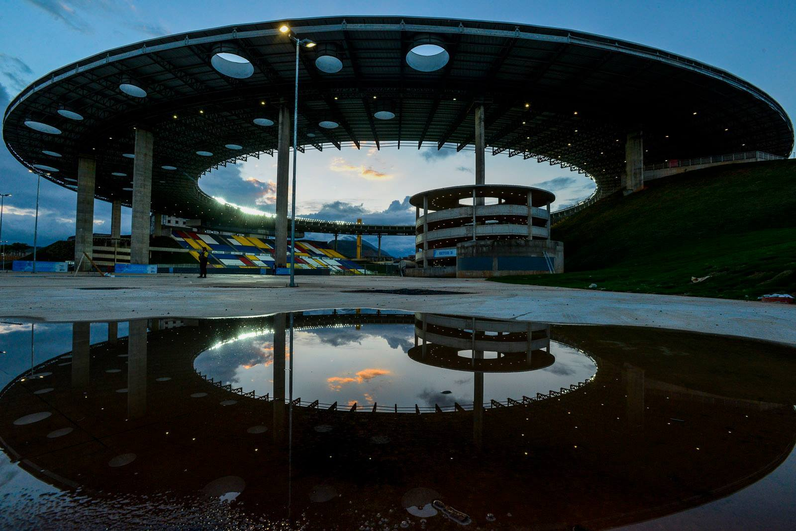

Estádio Kleber Andrade
Projetos de fundação e contenção

Wind Fence AMT
Projeto de Fundação

Adensamento de Solos Moles
Rodovia Darly Santos
Projetos de fundação e contenção
Projeto de Fundação
Rodovia Darly Santos
Fundada em 2000, a PENEDO ENGENHARIA E ARQUITETURA LTDA é uma empresa que atua no setor de projeto e consultoria nas áreas em engenharia civil e arquitetura.
Sua equipe de engenharia civil é especializada na área de geotecnia, com maior atuação em projeto e consultoria de fundações, contenções, estabilidade de taludes, aterros para guindastes, aterros para solos moles e avaliações técnicas de projeto (ATP).
Engenheiro Civil na especialidade de Mecânica dos Solos pela UFRJ em 1976. Atuou nas áreas de projeto e execução de grandes obras de fundações, contenções, barragens, terraplenagem, exploração de pedreira, instrumentação e investigação geotécnica, nos estados do RJ, ES, SE, PA, MA e RS, e no exterior, em empresas como a Geotécnica S.A. e a FICHET S.A. até 1986.
Desde 1986 é sócio proprietário e diretor da Brascontec Engenharia e Tecnologia Ltda, atuante em todo o Brasil na área de controle tecnológico na construção civil. Desde 1993 é diretor técnico da Concrevit Concreto Vitória Ltda. Em 2000, fundou a Penedo Engenharia e Arquitetura Ltda, onde atua com consultoria e projeto na área de geotecnia.
Engenheiro civil com ênfase em geotecnia pela PUC-Rio em 2009. Mestre em engenharia civil na área de geotecnia pela PUC-Rio em 2012, desenvolveu pesquisa na área de geotecnia experimental. Desde 2010 é sócio proprietário da Penedo Engenharia e Arquitetura Ltda, onde atua com consultoria e projeto na área de geotecnia.
Desde 2011 é engenheiro da Brascontec Engenharia e Tecnologia Ltda, com destaque para atuação em ensaios em fundações, contenções e estruturas, controle tecnológico de concreto e solos, projetos de adensamento e instrumentação em solos moles, entre outros.

Todos os Direitos Reservados © 2024
Desenvolvido por 3Master Tecnologia